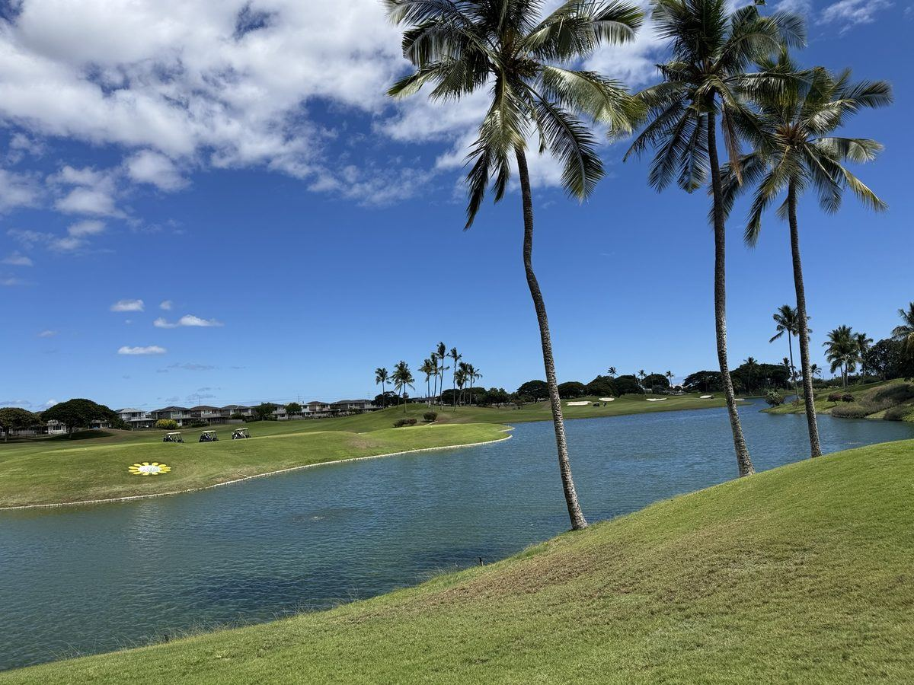

別れの予感
新しい動画ファイルを使用する場合は、GitHubに wakarenoyokan_full.mp4 をアップロードしてください。
青い海、やさしい風、あたたかな陽射し。
心が解き放たれる、ハワイの記憶。
ハワイは、青い海と空、椰子の木、サンセット、そして人々の笑顔が調和する楽園です。
このページでは、旅の風景、ゴルフ、食事、そして映像作品を「City of Heaven」という世界観でまとめました。

サンセット、ビーチ、ゴルフ、グルメ。ハワイの記憶を写真で巡ります。
動画はGitHub上にあるファイル名と一致するように設定しています。
新しい動画ファイルを使用する場合は、GitHubに wakarenoyokan_full.mp4 をアップロードしてください。
写真から作ったハワイのスライドショー動画です。
追加アップロードした動画用の枠です。